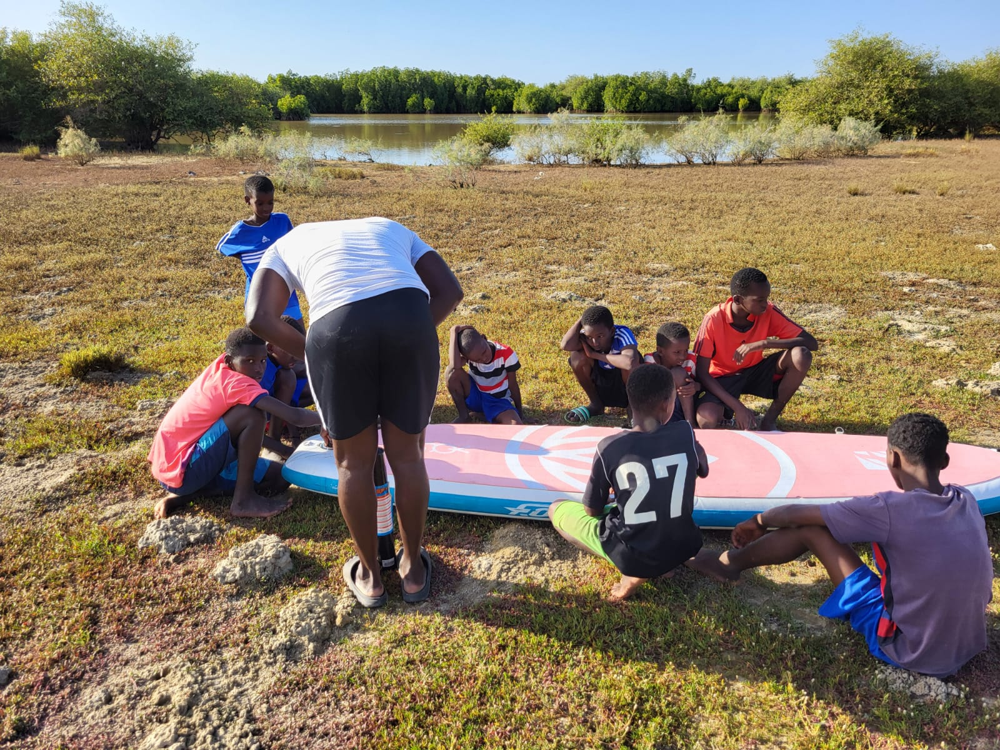

Samedi 17 mai 2025
Au cœur du quartier de Diamaguène
-
Initiation au paddle
Une première découverte du fleuve pour les enfants, dans un cadre ludique et encadré.
-
Grand nettoyage citoyen
Une action collective avec les habitants, les jeunes et les associations locales.
-
Sensibilisation environnementale
Des échanges dans le marché et auprès des commerçants pour encourager les gestes écoresponsables.
-
Mise en valeur des quais
Des fresques, décorations et animations collectives pour valoriser les espaces partagés.
-
Match de football de gala
Une rencontre fraternelle entre les jeunes du quartier et les bénévoles de The Flow Sénégal.